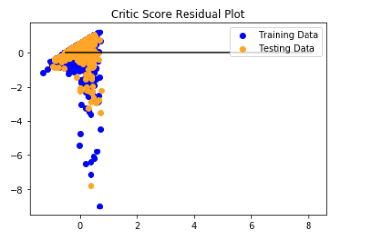
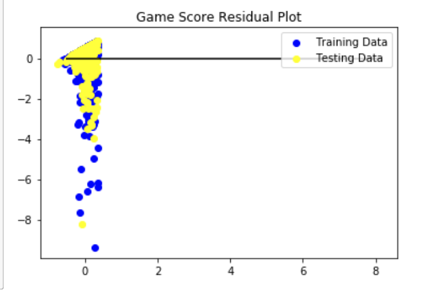

From the above analysis, it is seen that all the models gives almost similar result with Critic
Score. Yet the Best Training Model was found to be the "Ridge Model" as the MSE is lower than
other
models and the R2 score is higher by few points. With the MSE : 0.77 and R2: 0.14, we can say that
the Error Value is quite high and the Ridge
Score is too low therefore we can conclude that the Critic Scores are not a very reliable
predictor of the future success of the video game sales. Although they do have a positive
corelation with the sales yet it is a weak one.
Game Score Residual
-

From the above analysis, it is seen that all the models gives almost similar result with Game
Score. Yet the Best Training Model was found to be the Ridge Model as the MSE is lower than other
models
and the R2 score is higher by few points. With the MSE : 0.86 and R2: 0.046, we can say that the
Error Value is quite high and the Ridge
Score is too low therefore we can conclude that the Game Scores are not a very reliable predictor
of the future success of the video game sales. Although they do have a positive corelation with
the sales yet it is a weak one.
Play Score Residual
-

From the above analysis, it is seen that all the models gives almost similar result with Play
Score. Yet the Best Training Model was found to be the Ridge Model as the MSE is lower than other
models
and the R2 score is higher by few points. With the MSE : 0.78 and R2: 0.133, we can say that the
Error Value is quite high and the Ridge
Score is too low therefore we can conclude that the Play Scores are not a very reliable predictor
of the future success of the video game sales. Although they do have a positive corelation with
the sales yet it is a weak one.